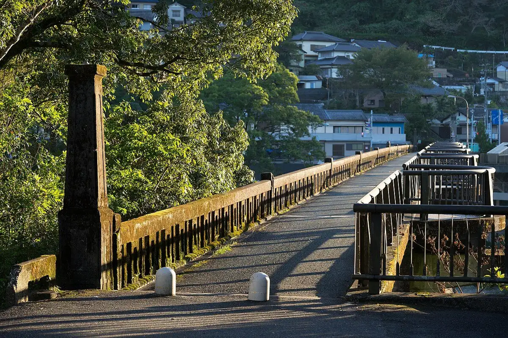
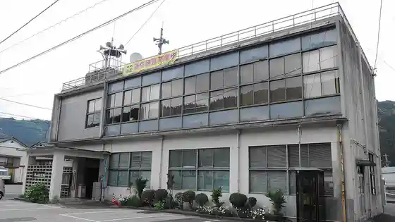
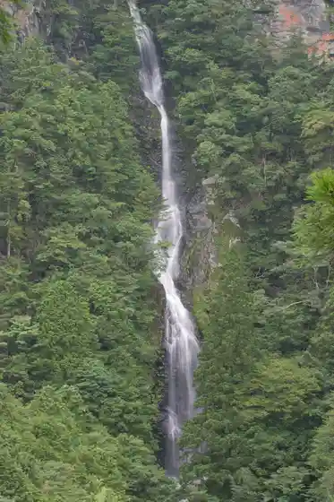
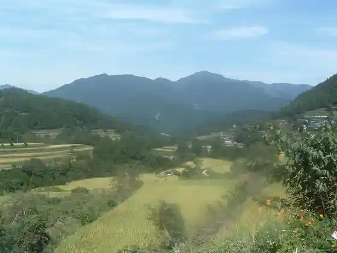
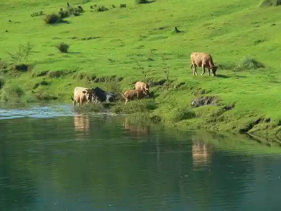

Motoyama
Motoyama · Kochi
Motoyama
Highlighted on the Kochi map.

Stay
Ikkenyado Asemi
Dining
Marugoto Akaushi !
Ichi Matsu
Aji Raku
Izakaya Nissan
Ase Migawa Shokudo Kadoya
Kitchen Kurune
Resutoran Habesuterasu
Sights
Kyu Motoyama Bridge
Motoyama Town Hall

Aka Taki

Shiraga Yama

Tosa Akaushi no Hoboku

Yamazaki Dam
Motoyama Chobo